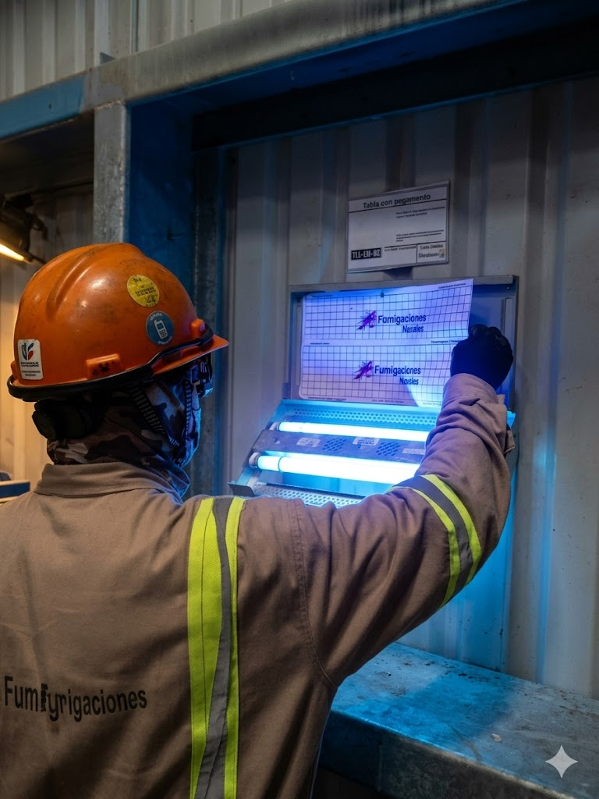

Conoce quiénes somos, cómo trabajamos y por qué las industrias más reguladas de México confían en nosotros.
Fumigaciones Navales es una empresa especializada en el control profesional de plagas urbanas e industriales, con un origen que nos distingue: nacimos en el mar.
Nuestra historia comenzó en el sector naviero, donde el control de plagas no es opcional — es una cuestión de salud pública internacional. Los puertos son puntos críticos de dispersión de enfermedades y plagas entre países, y ahí aprendimos que la exigencia no tiene margen de error.
Con esa mentalidad de precisión, expandimos nuestra experiencia hacia las industrias más reguladas del país: alimentaria, farmacéutica, petroquímica y centros logísticos. Hoy, esa misma disciplina naval es la que aplicamos en cada programa que diseñamos.
Contamos con técnicos certificados por SEP CONOCER en Manejo Integrado de Plagas y capacitación especializada en México, Estados Unidos, Panamá y Perú. No solo controlamos plagas — construimos sistemas de protección sanitaria a largo plazo.
Desde el sector naviero hasta las plantas más reguladas del país. Cada etapa nos hizo mejores en lo que hacemos.
Un proceso estructurado, transparente y documentado en cada etapa. Desde la primera visita hasta los reportes de auditoría.
Actualmente brindamos servicios especializados en dos estados estratégicos con alta concentración industrial, portuaria y logística en México.

Un especialista puede evaluar sus instalaciones y diseñar un programa MIP a la medida de su operación y normativa aplicable. Sin compromiso.